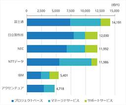
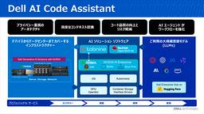
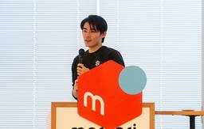

Publickey
https://www.publickey1.jp/
Enterprise ITに軸足を置き、新たにIT業界を変えつつあるクラウドコンピューティングやHTML5など最新の話題を、ブロガー独自の分析を交え、充実した記事で紹介するブログです。毎日更新しています。
フィード

国内ITサービス市場、昨年（2024年）の売上1位は富士通、2位は日立製作所、3位はNEC。IDC Japan
Publickey
調査会社のIDC Japanは2024年の国内ITサービス市場ベンダー売上ランキングを発表しました。 売上の上位5社は1位から順に、富士通、日立製作所、NEC、NTTデータ、IBM、アクセンチュア。 昨年4位であった日立製作所が前年比売上額...
2日前

オラクルが4.5兆円の超大型クラウド案件を獲得／モンハンワイルズにおけるTiDB導入背景／AIに仕様書を読ませるとテストケースを自動作成ほか。2025年7月の人気記事
Publickey
名刺やハガキなどをスキャンして電子化するScanSnapを8年ほど使っていたのですが、ついに壊れてしまいました。しかしもう滅多に名刺交換もしませんし年賀状を始めとしたハガキのやり取りもかなり少なくなっています。 ですのでこの令和にいまさら新...
2日前
GitHubがあらゆるレベルの開発者に向けた夏のハッカソンを開催中。「楽しく、ばかばかしく、創造的なプロジェクト」を審査、9月22日締め切り
Publickey
GitHubは、「For the Love of Code」と名付けた夏のハッカソンを開催中です。 That idea you've been sitting on? The domain you bought at 2AM? A ...
4日前

すべてオンプレミスで稼働するAIコードアシスタント「Dell AI Code Assistant」、デル・テクノロジーズが国内で提供開始
Publickey
デル・テクノロジーズ（以下、デル）は、同社のサーバやストレージ、ネットワーク機器とNvidiaのGPUを用いたシステム基盤の上で、生成AIとAIコードアシスタントソフトウェアを実行することで、すべてがオンプレミス上で稼働する「Dell AI...
5日前

DevinとWindsurfを統合した未来はどうなる？ 「Devin Meetup Tokyo 2025」に共同創業者が来日、基調講演レポート
Publickey
ソフトウェア開発におけるAIエージェントの代表的なサービス「Devin」のユーザーイベント「Devin Meetup Tokyo 2025」が、7月26日土曜日にAIエージェントユーザー会（AIAU）主催により開催されました。 会場となった...
6日前

GitHub、自然言語の指示だけでアプリが自動生成される「GitHub Spark」パブリックプレビュー開始
Publickey
GitHubは、自然言語で指示するだけで生成AIによってTypeScriptとReactを用いたフルスタックのアプリケーションが自動的に生成される「GitHub Spark」のパブリックプレビュー開始を発表しました。 Today we’re...
9日前
Webブラウザ上で高速なグラフィックスレンダリングとGPGPUなどを可能にする「WebGPU」、Chromeに続いてFirefoxも正式対応
Publickey
今週リリースされたFirefox 141で、Webブラウザ上でGPUプログラミングなどを可能にするWebGPUが正式な機能として組み込まれたことが発表されました。 WebGPUはグラフィックスもGPGPUも WebGPUは、Web上でこれま...
10日前
Red Hat、ビジネスアプリ開発者向けのRHEL無料プログラム「Red Hat Enterprise Linux for Business Developers」提供開始
Publickey
Red Hatは、ビジネスアプリケーション開発においてRed Hat Enterprise Linux（以下、RHEL）を無料で利用可能にするプログラム「Red Hat Enterprise Linux for Business Devel...
11日前
オラクル純正の「MCP Server for Oracle Database」が登場、自然言語でOracle DBに問い合わせ可能
Publickey
オラクルは、生成AIがMCP（Model Context Protocol）を通じてOracle Databaseと対話を可能にする「MCP Server for Oracle Database」をリリースしました。 MCP Server ...
12日前
IT運用担当者への調査結果、「昇給・昇進が遅い」「新しい技術に触れる機会がない」「重責なのに待遇が悪い」などに不満。ガートナージャパン
Publickey
調査会社のガートナージャパンは、国内のIT運用担当者は待遇面や専門スキル獲得機会に関する不満／不安が根強いとの調査結果を発表しました。 調査結果によると、IT運用担当者が最も不安を抱いているのは「他のIT部門のメンバーと比べて昇給・昇進が遅...
17日前
DevinのCognitionがAIコードエディタ「Windsurf」の買収発表。今後Windsurfの機能や知財をCognition製品に統合へ
Publickey
AIエージェントによる自律的なシステム開発を行うサービス「Devin」を展開するCognitionと、AIコードエディタ「Windsurf」を提供するWindsurf社の両社は、CognitionがWindsurfを買収することで合意したこ...
18日前
AWSがAIコードエディタ「Kiro」をプレビュー公開、VS Code互換。AIとチャットしながらプロダクトを開発
Publickey
Amazon Web Services（AWS）は、AIコードエディタ「Kiro」をプレビュー公開しました。 KiroはVisual Studio Code（VS Code）互換のコードエディタに生成AIを統合したものです。開発者は要件作成...
19日前
AWSに新機能や改善点を要望できる「ウィッシュリスト」が登場。AWS開発者のためのポータル「AWS Builder Center」公開
Publickey
Amazon Web Servicesは、同社が「AWSビルダー」と呼ぶAWSを用いてシステムを開発するAWS開発者のためのポータルサイト「AWS Builder Center」の公開を発表しました。 AWS Builder Centerは...
19日前
日本オラクル、日本国内在住者だけで構成されるクラウド運用支援組織を発足、日本でのソブリンクラウド導入加速へ
Publickey
日本オラクルは、日本国内在住者だけで構成されるクラウド運用支援組織「ジャパン・オペレーション・センター」の開設を発表しました。 ジャパン・オペレーション・センターは「ソブリンクラウド」の導入加速やAI活用の推進などを目的とすると説明されてい...
19日前
GoogleがAIコードエディタへ進出か、「Windsurf」のCEOら主要な人材を引き抜き。Windsurf自体は開発継続を表明
Publickey
主要なAIコードエディタの1つである「Windsurf」を開発する同名のWindsurf社は、同社CEOであるVarun Mohan氏、共同創業者のDouglas Chen氏、および同社の研究開発部門の社員数名が、Googleに移籍したこと...
19日前